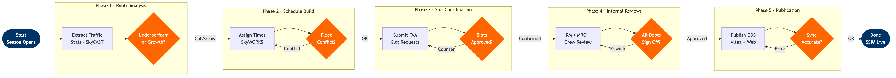

Seasonal Schedule Construction
Network and Pricing › Schedule Planning · 16 L4 steps · 5 phases · 6 decision gates
📊
Process Flow Diagram (BPMN)

📋
L4 Process Steps
| Step | Step Name | Role / Swim Lane | System | Input | Output | KPI | Dec? | Exc? |
|---|---|---|---|---|---|---|---|---|
Phase 1 · Route Analysis 1.1 |
Extract prior season route traffic stats | Network Planning Analyst | Amadeus SkyCAST | Prior SSIM, BTS O&D data | Route performance report by O&D pair | Load factor %; Yield per RPM | N | N |
| 1.2 | Identify underperforming routes for reduction | Network Planning Analyst | SkyCAST + SkySYM | Route performance report | Candidate cut list with revenue impact | Revenue per ASM vs breakeven | Y | N |
| 1.3 | Identify growth routes for frequency uplift | Network Planning Analyst | SkySYM + SkyCAST | Market demand forecast | Growth candidate list ranked by PRASM | Projected incremental PRASM | Y | N |
Phase 2 · Schedule Build 2.1 |
Assign departure/arrival times per route | Schedule Manager | Amadeus SkyWORKS | Growth/cut list; Fleet availability plan | Draft schedule with assigned times | Avg aircraft turn time compliance % | Y | Y |
| 2.2 | Apply MCT rules + validate airport curfews | Schedule Manager | SkyWORKS + Airport ops data | Draft schedule | Constraint-validated schedule | MCT compliance rate % | N | Y |
| 2.3 | Validate schedule against fleet plan | Schedule Manager + Fleet Planning | SkyMAX + MRO system | Draft schedule; Fleet maintenance calendar | Fleet-validated schedule | Aircraft utilization % (target >12 hrs) | Y | Y |
Phase 3 · Slot Coordination 3.1 |
Submit slot requests to FAA / airport coordinators | Slot Coordinator | SkyWORKS + FAA SWIM | Validated draft schedule | Slot request submissions to ACL/FAA | Slot approval rate % | N | N |
| 3.2 | Receive slot confirmations or counter-offers | Slot Coordinator | Amadeus SkyWORKS | FAA/airport responses | Confirmed slot list + counter-offer list | % slots confirmed as requested | Y | Y |
| 3.3 | Negotiate slot swaps with other carriers | Slot Coordinator + VP Network Planning | Manual bilateral negotiation | Counter-offer list | Agreed slot swap documentation | Swap resolution cycle time (days) | Y | Y |
Phase 4 · Internal Reviews 4.1 |
Revenue Management reviews schedule | Revenue Management Analyst | Amadeus NRM | Slot-confirmed draft schedule | RM-approved schedule or flagged itineraries | Projected PRASM impact vs prior season | Y | N |
| 4.2 | MRO reviews schedule for Mx window conflicts | MRO Planner | Custom MRO system | RM-approved schedule; Fleet Mx calendar | MRO-cleared schedule | Maintenance coverage %; AOG conflict count | Y | Y |
| 4.3 | Crew Planning reviews schedule for pairing feasibility | Crew Planning Manager | AWS-hosted crew mgmt system | MRO-cleared schedule; FAA Part 117 rules | Crew-feasible schedule | Pairing cost per block hour; Legal rest % | Y | Y |
| 4.4 | Schedule Manager issues final approved schedule | Schedule Manager | Amadeus SkyWORKS | All dept sign-offs (RM + MRO + Crew) | Approved SSIM-format seasonal schedule | Cross-dept approval cycle (target <30 days) | N | N |
Phase 5 · Publication 5.1 |
Distribute SSIM to PSS and all GDS channels | IT / Scheduling Ops | Altéa PSS + GDS APIs | Approved SSIM file | Published flight inventory across all channels | GDS availability accuracy %; Time-to-publish | N | Y |
| 5.2 | Update public timetable on airline website and app | Digital Product Team | Website CMS + PSS inventory feed | Approved SSIM | Live public schedule on web and mobile | App/web sync accuracy % | N | Y |
| 5.3 | Notify corporate portal and TMC partners | Corporate Sales Operations | Corporate portal + GDS PRISM | Approved schedule changes | TMC and corporate account notifications | TMC notification lead time (target >60 days) | N | N |
🗃